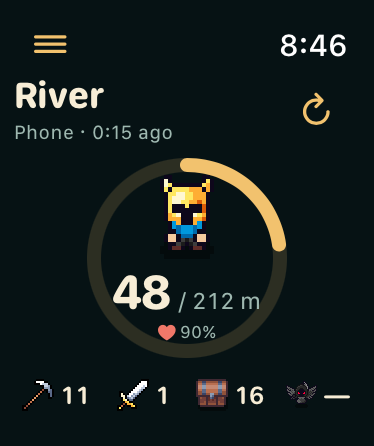
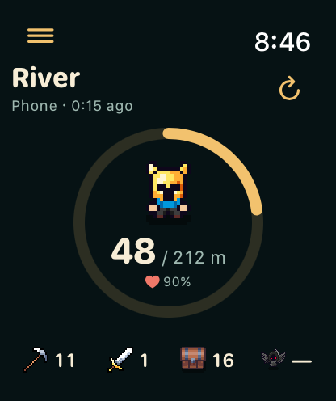
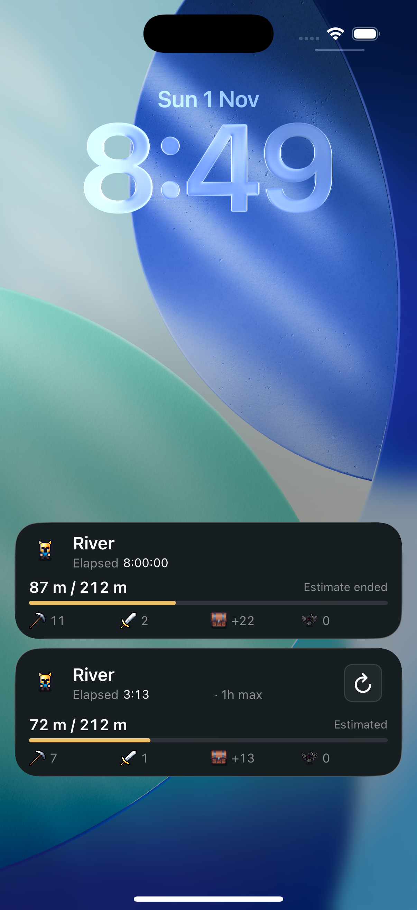
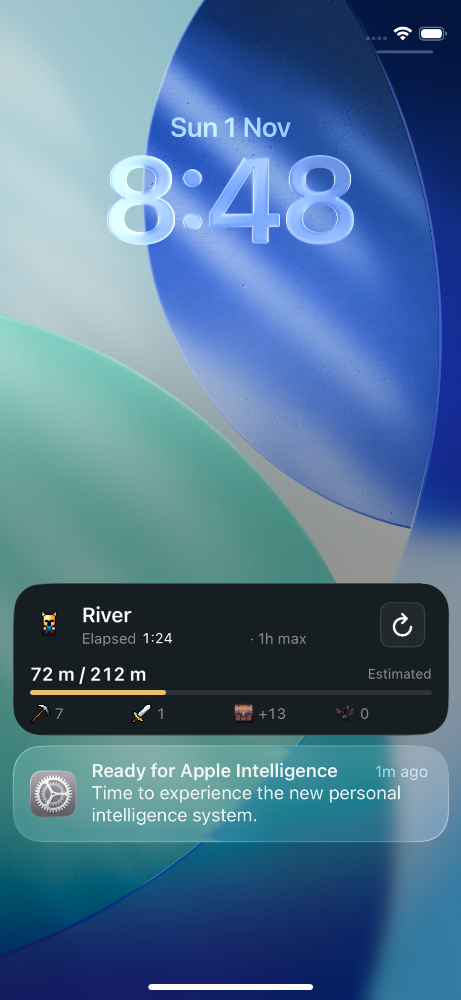
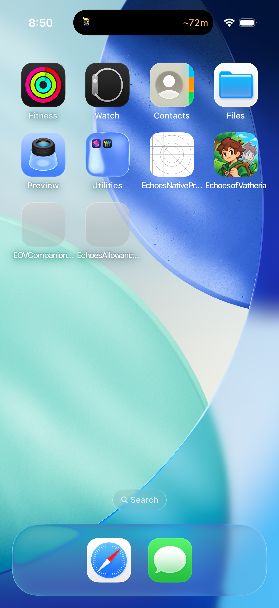

Background allowance and Watch dial
Elapsed time now includes the one-hour maximum. The 20,000-task/kill ceiling is removed. The larger Watch uses its extra height for a bigger dial and a lower information row.




Controlled snapshots rendered by the production SwiftUI views. An older snapshot without the allowance keeps its elapsed display and omits the max label.
Live Activity
The allowance comes from the game’s time policy. It is separate from an estimate that stops early at an encounter or reaches its available data limit.




Dynamic Island
The compact view shows your character and distance. Touch and hold it to open the expanded view, which contains Refresh. The compact view itself does not contain an interactive button.

Game snapshots update the activity while the game runs. Once the game is suspended, the elapsed timer advances on the system; the counters need Refresh or a later app update. No server or automatic background scheduler was added.
Native validation and remaining device checks · All Watch screens. This work has not been uploaded to TestFlight.